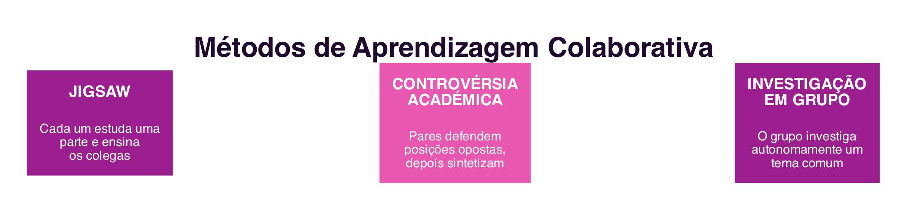
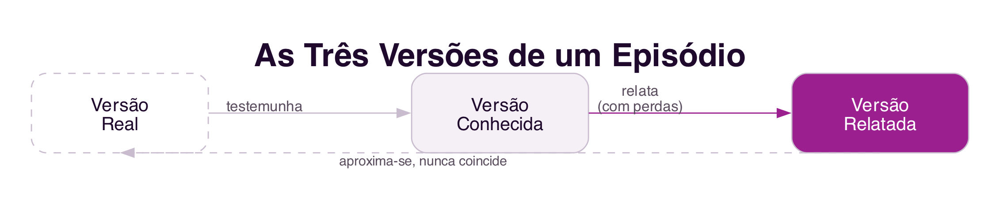

9 Aprendizagem Colaborativa e Conhecimento Coletivo
Aprendizagem Colaborativa e Conhecimento Coletivo
Introdução
As primeiras tentativas de usar o computador no ensino, décadas antes da internet como a conhecemos hoje, viam o computador como uma espécie de professor automatizado: um sistema que apresentava conteúdo, verificava respostas e reforçava comportamentos corretos, segundo princípios behavioristas de instrução programada. Este capítulo trata de um paradigma diferente, consolidado a partir dos anos 1970 e reforçado pela chegada dos sistemas colaborativos: a aprendizagem como processo social, em que o conhecimento não é transmitido de um professor-computador para um aluno passivo, mas construído em conjunto por quem aprende (Castro e Menezes 2011).
9.1 Aprendizagem Colaborativa
Aprender é uma atividade decorrente da contínua procura de adaptação ao meio físico e social: aprende-se muito com os outros, resolvendo problemas em conjunto, obtendo explicações sobre problemas já resolvidos, debatendo vantagens e desvantagens de uma escolha, e construindo sínteses coletivas (Castro e Menezes 2011). A aprendizagem colaborativa assenta em dois princípios: os estudantes trabalham juntos na procura de aprender, e são responsáveis não só pela sua própria aprendizagem, mas também pela aprendizagem dos colegas. Estes princípios implicam objetivos coletivos que, quanto melhor forem cumpridos, maiores são as possibilidades de aprendizagem de cada participante (Castro e Menezes 2011).
9.2 Métodos de Aprendizagem Colaborativa
Três métodos, com décadas de uso comprovado em contexto escolar, ilustram formas concretas de estruturar a aprendizagem colaborativa (Figura 9.1) (Castro e Menezes 2011):

- Jigsaw (“quebra-cabeças”): a turma organiza-se em grupos, e cada membro de um grupo estuda, num “grupo de especialistas”, uma parte diferente do tema. De seguida, cada estudante regressa ao grupo original para ensinar aos colegas a parte que estudou. Como cada estudante detém uma peça do “quebra-cabeças” que os outros não têm, a interdependência entre eles é total: sem a contribuição de todos, o grupo não reconstrói o tema completo.
- Controvérsia Académica: os estudantes são organizados em pares que defendem posições opostas sobre um tema, apresentam os melhores argumentos possíveis para a sua posição, discutem abertamente, invertem depois as posições que defendiam, e terminam construindo, em conjunto, uma síntese que integra as melhores ideias de ambos os lados.
- Investigação em Grupo: pequenos grupos investigam, de forma autónoma, um tema de interesse comum, desde a definição da pergunta de investigação até à apresentação de um relatório final, combinando investigação, interação social, interpretação individual e motivação intrínseca.
Apesar de diferentes entre si, os três métodos partilham componentes essenciais: objetivos de grupo que incentivam os estudantes a apoiarem-se uns aos outros; responsabilidade individual, que exige que cada membro domine os conceitos que explica aos colegas; e oportunidade igual de sucesso, reconhecendo cada estudante pelo seu esforço, independentemente das suas capacidades de partida (Castro e Menezes 2011).
9.3 Conhecimento Coletivo
Muitos dos problemas que hoje se resolvem em organizações são demasiado complexos e multidisciplinares para uma só pessoa. O conhecimento coletivo é a combinação dos conhecimentos individuais de um grupo com um objetivo comum, e é mais rico do que a simples soma desses conhecimentos individuais, porque a combinação de diferentes perspetivas revela relações que não são visíveis quando cada conhecimento é apresentado de forma isolada (Borges 2011).
Um problema recorrente é a recuperação de conhecimento sobre eventos passados que não foram devidamente documentados quando ocorreram. Neste processo, distinguem-se três versões de um mesmo episódio (Figura 9.2) (Borges 2011): a versão conhecida, guardada na mente de quem testemunhou o episódio, um conhecimento tácito e abstrato até ser transmitido; a versão relatada, o relato que resulta da transmissão desse conhecimento, oralmente ou por escrito; e a versão real, o que de facto aconteceu, um conceito também abstrato, que raramente é possível reconstituir por completo.

Em qualquer transmissão de conhecimento, seja por socialização (explicação oral) seja por externalização (registo escrito), há perdas: ninguém reproduz tudo o que sabe ao fazer um relato, e a socialização sofre ainda do efeito “telefone sem fio”, em que o conhecimento se altera a cada nova transmissão (Borges 2011).
9.4 Group Storytelling
O group storytelling, ou contagem de histórias em grupo, é uma técnica de recuperação coletiva do conhecimento em que várias pessoas contribuem, de forma síncrona ou assíncrona, para reconstituir um episódio, aproximando a versão relatada da versão conhecida por cada participante (Borges 2011). A técnica atribui, tipicamente, quatro papéis aos participantes: o contador, que relata a sua versão dos factos; o facilitador, que procura inconsistências, contradições e lacunas entre os vários relatos; o revisor, que identifica passagens ambíguas ou incompletas; e o administrador, que organiza a dinâmica e convida os participantes.
Como diferentes pessoas relatam o mesmo episódio de formas diferentes, consoante a sua própria perspetiva, os relatos individuais podem relacionar-se de várias formas: confirmação, quando um relato confirma outro; inconsistência, quando dois relatos se contradizem; precedência, quando um evento antecede outro no tempo; e gap, quando falta informação entre dois relatos para que a história faça sentido. Explicitar estas relações é o que transforma um conjunto de relatos individuais numa verdadeira história coletiva, mais rica do que qualquer um dos relatos isolados.
9.5 Síntese
Este capítulo tratou da aprendizagem como processo social e da construção coletiva do conhecimento:
- A aprendizagem colaborativa substitui o computador-professor por uma construção conjunta do conhecimento entre estudantes que se responsabilizam uns pelos outros (Castro e Menezes 2011)
- Os métodos Jigsaw, Controvérsia Académica e Investigação em Grupo estruturam, de formas diferentes, a interdependência entre estudantes (Castro e Menezes 2011)
- O conhecimento coletivo é mais rico do que a soma dos conhecimentos individuais de um grupo, e distingue-se em versão conhecida, relatada e real (Borges 2011)
- O group storytelling recupera coletivamente o conhecimento sobre um episódio, através de papéis definidos e da explicitação de relações entre relatos individuais (Borges 2011)
9.6 Para Refletir
Pensa num trabalho de grupo em que usaste um dos três métodos discutidos, mesmo sem lhe saberes o nome: qual deles, e como correu a interdependência entre os membros do grupo?
E quanto ao group storytelling: já reconstituíste, com colegas ou amigos, a história de um acontecimento partilhado, cada um a partir da sua própria versão? Que inconsistências ou lacunas encontraram entre os vossos relatos?